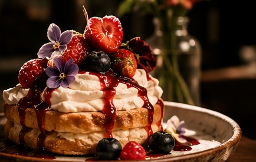
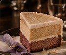
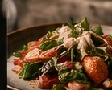

Café coado da casa
R$ 12*Uma xícara de café fresco para acompanhar o momento.
Exemplo demonstrativoSABORES DA ESTAÇÃO · BLUMENAU, SC
Receitas de raiz, ingredientes locais e novidades que acompanham a estação.

Uma estação de cada vezCardápio demonstrativo. O site oficial não publica os preços atuais; nomes de pratos e valores abaixo são exemplos visuais, não representam o menu ou preços vigentes. Os itens reais variam conforme a estação e disponibilidade.
Consulte o menu atual ↗PARA DESPERTAR
Um convite a ficar mais um pouco.
Uma xícara de café fresco para acompanhar o momento.
Exemplo demonstrativoEspresso e leite vaporizado, finalizado com delicadeza.
Exemplo demonstrativoInfusão aromática escolhida para os dias da estação.
Exemplo demonstrativoUma pausa cremosa para acompanhar a confeitaria.
Exemplo demonstrativoDA VITRINE
Feitos para saborear aqui ou levar.
Massa folhada e dourada, feita para uma pausa sem pressa.
Exemplo demonstrativo
Um dos exemplos de confeitaria citado no site oficial.
Exemplo demonstrativoFrutas da época em uma receita artesanal.
Exemplo demonstrativoDoce de vitrine para levar ou acompanhar um café.
Exemplo demonstrativoPARA COMEÇAR DEVAGAR
Sugestões criadas para esta apresentação.
Pães, fruta da estação e acompanhamentos da casa.
Exemplo demonstrativoPão artesanal com vegetais assados e ervas frescas.
Exemplo demonstrativoFrutas frescas e um toque doce da cozinha.
Exemplo demonstrativoPães e pequenos acompanhamentos para compartilhar.
Exemplo demonstrativoCOZINHA DE RAIZ
A disponibilidade acompanha a estação.

Uma sugestão ilustrativa com ingredientes frescos e locais.
Exemplo demonstrativoUma ideia de prato afetivo para o menu de almoço.
Exemplo demonstrativoVegetais, grãos e ervas reunidos em uma receita leve.
Exemplo demonstrativoUma sobremesa para fechar o almoço com calma.
Exemplo demonstrativoFEITO COM CARINHO
Receitas e ingredientes da região.
Feito com farinha de amêndoas; opção sem glúten citada no site oficial.
Exemplo demonstrativoUma preparação afetiva, sem ingredientes ultraprocessados.
Exemplo demonstrativoPães, bolos e doces escolhidos no dia.
Exemplo demonstrativoUma receita que acompanha os ingredientes disponíveis.
Exemplo demonstrativoPARA COMPARTILHAR
Menus personalizados, sob consulta.
Proposta ilustrativa por pessoa; menu e valor variam por evento.
Exemplo demonstrativoComposição demonstrativa com serviço, louças e decoração.
Exemplo demonstrativoExemplo de proposta personalizada para compartilhar.
Exemplo demonstrativoA Botané prepara menus exclusivos para eventos.
Consulte a equipeINGREDIENTES DA ESTAÇÃO, SEM PRESSA
Os pratos mudam com a estação e a disponibilidade dos ingredientes.
Pergunte o que tem hoje →✳